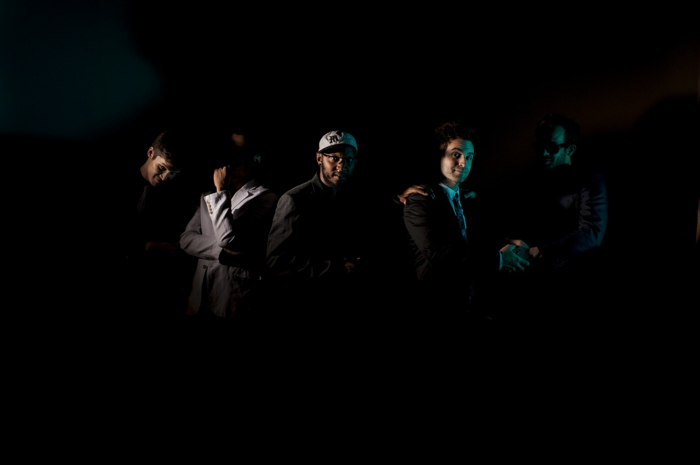

Artists
Blackthorne back to top

Showing such influences as “Reign in Blood”-era Slayer and the less serious side of 80’s metal, (like SOD) BLACKTHORNE also bring in the energy and intensity of hardcore from the late 80’s—90’s.
Band members include Bob Eisenbise/Bass (Killsadie, Shotgun Monday, Chibalo), Travis Bos/Vocals (Song of Zarathustra, Book of Dead Names, Chariots, Chibalo, ALANS, HSM), Steve Brooks/Guitar (Chibalo) and Matt Seitzinger/Drums (HSM)
The Blackthorne logo was created by Christophe Szpajdel(Lord of the Logos).
Releases
Croix Cambria Clayton back to top

Croix Clayton is a Minnesota-born musician, writer, and artist. As a member of The American Monsters, Ashcroft, Thank You, Bravo Team, and Young Quitters, he has shared the stage with artists such as Arab Strap, The Bellrays, Melt-Banana, Jackie-O-Motherfucker, Dillinger Four, John Weise, Murder City Devils, Fog, Growing, Paul Metzger, Wrangler Brutes, The Soviettes, and Lifter Puller. He has performed at or displayed work in the Walker Art Center, The Soap Factory, Lei Gallery (Taichung, Taiwan) and The Minneapolis Institute of Arts MAEP gallery. His work as an experimental science-fiction writer drew the attention of veteran underground publisher (and former Blue Cheer member) V. Vale, who compared Clayton's novel, The Gate Of Xibalba, to H.P. Lovecraft and William S. Burroughs. He lives and works in Kaohsiung City, Taiwan.
Releases
Marijuana Deathsquads back to top
Marijuana Deathsquads is the ever-evolving, experimental project lead by Ryan Olson, (producer/writer of POLIÇA and GAYNGS), Isaac Gale, and Stefon Alexander (P.O.S). With multiple drummers, a slew of electronic instruments, and highly effected vocals, their live shows are a violent onslaught of improvised yet tightly woven, jagged, intricate experimental sound.
Releases
Neighbors back to top

Neighbors is the brainchild of Brooklyn-based songwriter Noah Stitelman. Collaborating with Philadelphia producer Kyle "Slick" Johnson (whose work includes albums by Modest Mouse, The Hives, and Rogue Wave), Neighbors released its debut full length, Good Luck, Kid, in the fall of 2012.
Sort of ‘80s UK New Wave, sort of ’90s Synth Pop — sort of neither — Good Luck, Kid tries to overcome the disappointments of everyday life in a storm of manic Manchester rhythms, eerie soundscapes, and deadpan humor.
Neighbors newest album, Failure, picks up this theme — and ties a stick of dynamite to it.
Do good fences make good neighbors? Stitelman doesn’t know. But with Failure, he might just bring a few down with him.
Releases
Vi Som Älskade Varandra Så Mycket

VSAVSM — or Vi Som Älskade Varandra Så Mycket — are an amazing hardcore band from Stockholm, Sweden. Ex-members of The Khayembii Comminuque, Song Of Zarathustra, Cardinal Sin, Ruh, Interlace, Neighbors, Speemarket Avenue, Young Team, and The Comedy.